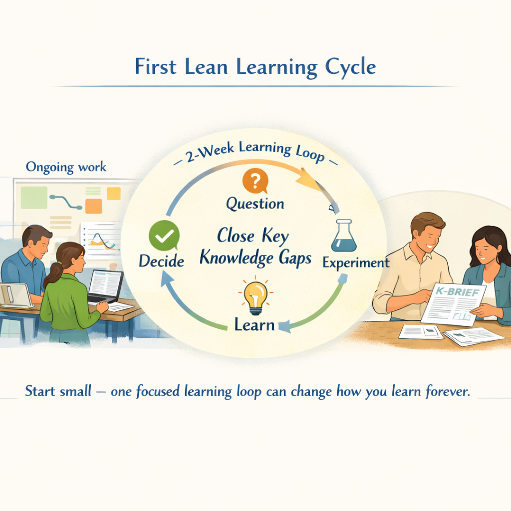
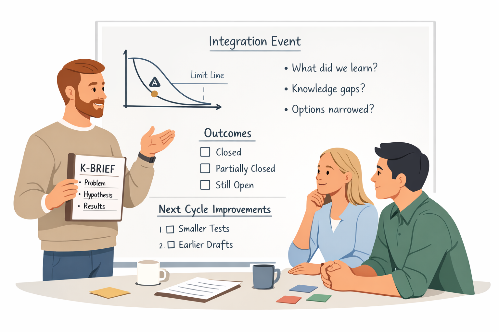

Before You Start
Pick a Decision, Not a Project
Most coaches and teams already have one product or module in mind where uncertainty feels high — a tricky interface, a new technology, or a demanding customer requirement. Instead of trying to design the whole project around Lean Learning Cycles, begin by choosing one concrete decision this module will help.
Ask three simple questions:
- Which decision do we wish we were more confident about?
- What is keeping us from deciding today (the knowledge gaps)?
- What is the latest point in time where this decision must be made to avoid delay?
Your first cycle will aim to close 1–3 of those knowledge gaps, not to solve everything.

Step 1
Frame the Cycle in One Page
Before you dive into tasks, take an hour with the team to frame the cycle on a single page. Include:
Step 2
Design Small Experiments
Translate those knowledge gaps and hypotheses into experiments that fit the timebox. For each selected gap:
Step 3
Run the Cycle with a Daily Learning Focus
During the cycle, the difference is not just what you do, but how you talk about it. Introduce a short daily or every-other-day check-in of 10–15 minutes:
- Each owner shares what was done and, more importantly, what was learned.
- Emerging surprises or issues are noted as potential new gaps or refinements.
- The team adjusts tasks if needed, but stays within the timebox.
Use a simple board — physical or digital — to show knowledge gaps selected for this cycle, experiments in states (Planned, Running, Analysing, Documented), and K Brief drafts being prepared.
Step 4
Hold a First Integration Event
At the end of the 2-week cycle, hold a short but focused integration event — even if not everything went to plan.

Prepare one K Brief draft per significant experiment (problem, hypothesis, method, results, implications) and one or two visual artefacts where possible.
In the event, discuss:
- What did we actually learn compared to what we expected?
- Which knowledge gaps are now fully or partially closed?
- Does this change our view of the key decision — can we narrow or eliminate options?
- What surprises or new questions have appeared?
Capture outcomes visibly: mark gaps as closed, partially closed, or still open; note any decisions made or options removed; write down 1–2 improvements for the next cycle.
Step 5
Decide Whether and How to Continue
The final act of the first cycle is to decide what happens next. As a team and with key stakeholders:
- Update your increment plan or simple roadmap based on what you learned.
- Re-rank remaining knowledge gaps by impact and urgency.
- Decide whether to run another Learning Cycle immediately, pause, or adjust scope.
For many teams, seeing one short cycle through — from framing to integration — is enough to create a pull for more. Leaders begin to see that knowledge and risk are becoming visible earlier; engineers start to see that experiments can be smaller, faster, and more focused than they thought.